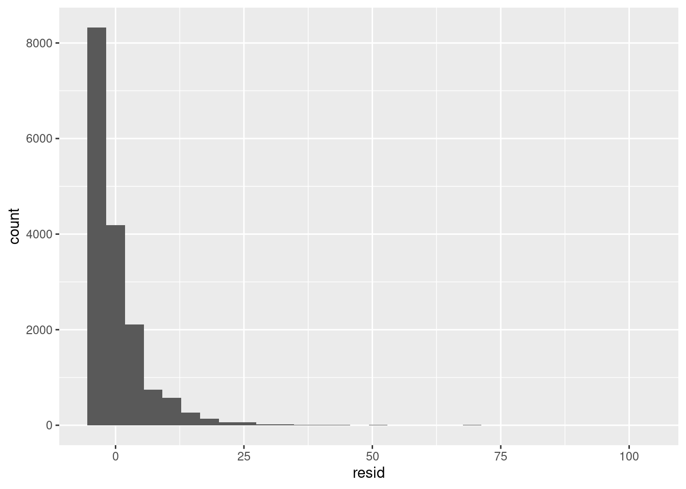
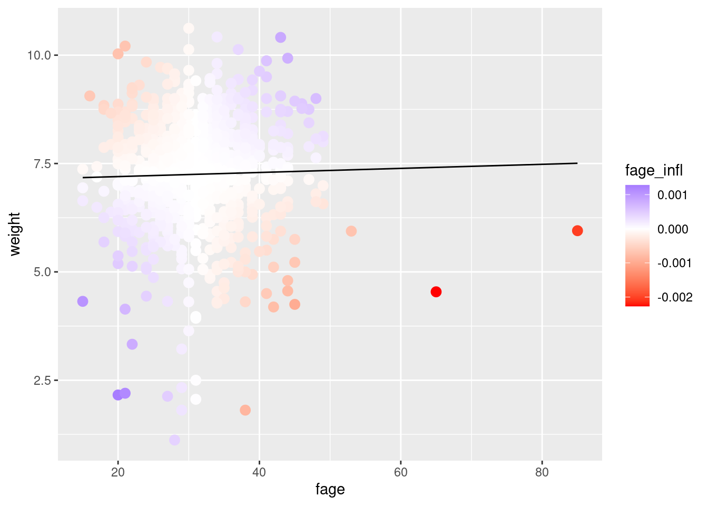

Discuss some was that extreme data can influence regression
There is no clear definition of an outlier
The (unbounded) influence of outlying \(y_n\)
Look at residuals using fit$residuals
The influence of outyling \(x_n\) and the leverage score
Look at leverage scores using hatvalues
The influence of removing a point (both leverage and residual)
Look at the influence function using influence
Births data
Let’s look at the births14 dataset, a random selection of 1000 observations from the US government
head(births_df)
fage mage mature weeks premie visits gained weight lowbirthweight
1 34 34 younger mom 37 full term 14 28 6.96 not low
2 36 31 younger mom 41 full term 12 41 8.86 not low
3 37 36 mature mom 37 full term 10 28 7.51 not low
4 32 31 younger mom 36 premie 12 48 6.75 not low
5 32 26 younger mom 39 full term 14 45 6.69 not low
6 37 36 mature mom 36 premie 10 20 6.13 not low
sex habit marital whitemom
1 male nonsmoker married white
2 female nonsmoker married white
3 female nonsmoker married not white
4 female nonsmoker married white
5 female nonsmoker married white
6 female nonsmoker married white
Although this is not a randomized controlled trial, we might look in the data for suggestive patterns to guide or support future research. This is an inference problem.
In particular, let’s ask how father’s age might affect birth weight.
Outlier \(\y_n\) will also tend to have outlier residuals.
To see this, let’s suppose there is one abberant value, \(\y_*\), which is very large, and which we enumerate separately from the well-behaved \(\y_n\).
Assume that \(\xv_*\) is not an outlier (i.e. the response is an outlier but the regressor is not). That means \(\frac{1}{N} (\X^\trans \X + \xv_* \xv_*^\trans) \approx \frac{1}{N} \X^\trans \X\). Let \(\betavhat_*= (\X^\trans \X)^{-1} \X^\trans \Y\) denote the estimated coefficient without the outlier.
We can write the data together with the outlier as
\[
\begin{pmatrix}
\Y \\
\y_*
\end{pmatrix}
\quad\quad
\begin{pmatrix}
\X \\
\xv_*^\trans
\end{pmatrix}
\] We have
This means that although the \(\y_*\) causes the \(\betahat\) to grow very large in an attempt to fit it, its residual remains large, and with the same sign as \(\y_*\).
This means you may be able to identify outlier responses by looking at a residual plot, e.g., a histogram of residuals, and seeing if any fitted residuals are atypical.
Microcredit data
Let’s take a look at some data from a study of microcredit in Mexico. The goal of the study is to estimate the effect of microcredit, which was randomly allocated.
For example, we might try to measure the effect of the treatment on “temptation goods.” We run the model \(\textrm{Temptation spend} ~ 1 + \textrm{treatment}\):
Call:
lm(formula = temptation ~ treatment, data = mx_df)
Residuals:
Min 1Q Median 3Q Max
-4.656 -3.985 -1.925 1.667 101.306
Coefficients:
Estimate Std. Error t value Pr(>|t|)
(Intercept) 4.65605 0.06635 70.177 <2e-16 ***
treatment -0.09604 0.09393 -1.022 0.307
---
Signif. codes: 0 '***' 0.001 '**' 0.01 '*' 0.05 '.' 0.1 ' ' 1
Residual standard error: 6.044 on 16558 degrees of freedom
Multiple R-squared: 6.314e-05, Adjusted R-squared: 2.746e-06
F-statistic: 1.045 on 1 and 16558 DF, p-value: 0.3066
However, we see that there are huge residuals:
`stat_bin()` using `bins = 30`. Pick better value with `binwidth`.

This is because spending has a very heavy tail!
We can produce big changes in the regression by dropping the 5 largest residuals (which is only 0.0301932 percent of the data):
print("With all datapoints:")
[1] "With all datapoints:"
summary(reg_mx)$coefficients
Estimate Std. Error t value Pr(>|t|)
(Intercept) 4.65605325 0.06634731 70.176975 0.0000000
treatment -0.09604309 0.09393141 -1.022481 0.3065682
print("Without the largest residual datapoints:")
[1] "Without the largest residual datapoints:"
summary(reg_drop_mx)$coefficients
Estimate Std. Error t value Pr(>|t|)
(Intercept) 4.6359381 0.06444850 71.932439 0.0000000
treatment -0.1053137 0.09124597 -1.154174 0.2484456
Unusual regressors
Unusually large regressor values are called “high leverage points,” since small changes in \(\beta\) produce large changes in the fitted values at the corresponding points. Since \(\xv_n\) is a vector, measuring what it means for \(\xv_n\) to be an outlier is a little more subtle than measuring what it means for a scalar like \(\y_n\) to be an outlier. But a sensible thing to do is to measure the size of \(\xv_n\) relative to \(\X^\trans \X\), which estimates the spread of the \(\xv_n\) values (if they are centered, it is an estimate of the covariance). We define the “leverage” score \[
h_n := \xv_n^\trans (\X^\trans \X)^{-1} \xv_n,
\]
and we can check for unusual \(\xv_n\) by looking for high leverage scores.
Note that \(h_n\) is the \(n\)–th diagonal entry of the “hat” matrix \(\proj{\X} = \X (\X^\trans \X)^{-1} \X^\trans\), so called because it “puts the hat on \(\Y\)”, since \(\Yhat = \proj{\X} \Y\). There are a few useful consequences of this fact.
\(0 \le h_n \le 1\)
Proof: Take the vector \(\ev_n\) that is \(1\) in entry \(n\) and \(0\) elsewhere.
Since \(\norm{h_n}^2 = 1\), and \(\norm{\proj{\X} \ev_n}^2 \le \norm{\ev_n}\), it follows that \(h_n \le 1\). And since \(\norm{\proj{\X} \ev_n}^2 \ge 0\), it follows that \(h_n \ge 0\).
\(\sumn h_n = P\)
There are \(P\) linearly independent unit vectors in the column span of \(\X\). Call them \(\uv_1, \ldots, \uv_P\). Since \(\proj{\X} \uv_p = \uv_p\), the \(\uv_p\) are all eigenvectors with eigenvalues one. Similarly, the \(N - P\) unit vectors spanning the space orthogonal to \(\X\) are eigenvectors with eigenvalue \(0\).
Finally, the \(\trace{\proj{\X}} = \sum_n h_n = P\) since the trace is the sum of the eigenvalues.
At least some \(h_n > 0\).
This follows directly from \(h_n \ge 0\) and \(\sum_n h_n = P\).
Additionally, we can see that \(\frac{d\yhat_n}{d \y_n} = h_n\). (This fact that one can use to define “leverage scores” in settings beyond linear regression.)
Putting this together, we can see that
Since \(\sumn h_n = P\) and \(0 \le h_n \le 1\), not too many leverage scores can be large.
On average, a typical \(h_n \approx P / N\) if the data is well-behaved.
If a leverage score is large, it means that the value of \(\y_n\) has a high influence on its own fit, \(\yhat_n\).
If a leverage score is large, \(\xv_n\) is large relative to the estimated “covariance” \(\meann \X^\trans \X\), up to its expected scaling of \(1/N\).
Effect of high leverage
What happens to a regression when you have very high leverage? Suppose that \(h_n = 1\). That means that the vector \(\ev_n\), which has \(1\) in entry \(n\) and \(0\) otherwise, is an eigenvector of \(\proj{\X}\), and consequently \(\ev_n\) is in the column span of \(\X\). This means that the \(n\)–th entry of \(\proj{\X} \Y\) is given by
This is the same as \(\y_n \approx \yhat_n = \betavhat^\trans \xv_n\), which forces the fit to pass through the point \((\xv_n, \y_n)\).
If there are \(P\) such high–leverage points, then \(\betavhat\) is completely determined by these points.
Note that, since \(\sumn h_n = P\) and \(0 \le h_n \le 1\), there can only be \(P\) leverage points that are approximately equal to one.
Although this intuition is for leverage scores that are exactly one, it applies to leverage scores that are large but not exactly one — outlier \(\xv_n\), with large leverage scores, force the regression line to fit the point, unlike outlier \(y_n\) with large residuals. To see this, note that
How big can the off–diagonal entries \(\left(\proj{\X}\right)_{nm}\) be when \(h_n\) is large? Again using the \(n\)–th standard basis vector \(\ev_n\), \[
\begin{aligned}
1 ={}& \norm{\ev_n}^2
\\\ge{}& \norm{\proj{\X} \ev_n}^2
\\={}& \ev_n^\trans \proj{\X} \proj{\X} \ev_n
\\={}& \sum_{m=1}^N \left(\proj{\X}\right)_{nm}^2
\\={}& \sum_{m \ne n} \left(\proj{\X}\right)_{nm}^2 + h_n^2,
\end{aligned}
\] so that, when \(h_n \approx 1\), \[
\sum_{m \ne n} \left(\proj{\X}\right)_{nm}^2 \le 1 - h_n^2 \approx 0,
\] and so \[
\yhat_n \approx h_n \y_n.
\]
Kleiber’s whale revisited
Recall Kleiber’s dataset of animal sizes and metabolisms. Let’s look at the original linear regression with and without the whale:
# Look at the data, find outlierslm_kl <-lm(Metabol_kcal_per_day ~ Weight_kg +1, kleiber_df)lm_drop_kl <-lm(Metabol_kcal_per_day ~ Weight_kg +1, kleiber_df %>%filter(Animal !="Whale"))
In this case, the fact that the whale has high leverage was obvious. But we can also see this from the leverage scores:
Data dropping
Above, we’ve shown how extreme values of \(\xv_n\) and \(\y_n\) can affect a linear regression. These two concepts can be combined by considering the effect of “data dropping.” Specifically, we might ask how a regression would be different had we excluded a particular datapoint. This is a nice concept because it measures how “important” an entire datapoint is, rather than separately considering the response and regressor.
Let \(\betavhat_{-n}\) denote the estimate of \(\betahat\) with the datapoint \(n\) left out. Recall that we wrote \[
\betavhat =\sumn \omegav_n \y_n
\quad\quad\textrm{where }\omegav_n := (\X^\trans \X)^{-1} \xv_n.
\] In your homework, you’ll show that, in linear regression, you can write down the exact formula:
\[
\betavhat_{-n} - \betavhat= -\frac{\reshat_n}{1 - h_n} \omegav_n
\approx -\omegav_n \reshat_n \quad\textrm{(when $h_n$ is small)}
\] The term \(\omegav_n\) is very close to a leverage score — in fact, \(h_n = \xv_n^\trans \omegav_n\). This formula says that a regression coefficient will have a large change when both \(\reshat_n\) and \(\omega_n\) are large.
The negative of the approximation for small \(h_n\) is known as the “empirical influence function” of the \(n\)–th datapoint (sometimes just “influence function”):
\[
\textrm{Influence function of datapoint }n := \omegav_n \reshat_n.
\]
For linear models, it can be computed using the influenceR function:
We can look at the graph and color the points by their influence function. Clearly we can see that the large fage points have high influence.

Bonus content: Data dropping (generalization to nonlinear estimators)
The above results rely heavily on the special structure of linear regression: e.g. the fact that \(\betahat\) is a linear combination of \(\Y\), and that \(\Yhat\) is a projection of \(\Y\). In more general settings such results are not available. In order to motivate the use of such diagnostics in more general settings (not covered in this class), let me introduce a slightly different approach based on derivatives.
Suppose we assign each datapoint a weight, \(\w_n\), and write
I have written \(\betahat(\wv)\) because the optimal solution depends on the vector of weights, \(\wv = (\w_1, \ldots, \w_N)^\trans\). When \(\wv = \onev\), we recover the original problem. When we set one of the entries to zero, we remove that datapoint from the problem. Using this, we can approximate the effect of removing a datapoint using the first-order Taylor series expansion:
Note that the Taylor series is a good approximation to the exact formula (given in the homework) when \(h_n \ll 1\), which is expected when \(h_n\) goes to zero at rate \(1/N\):
In more complicated nonlinear problems, the exact formula is unavailable, but the linear approximation is typically computed.
From this (or the exact formula), we can see that the effect of extreme values on \(\betahat\) is actually a product of both \(\reshat_n\) and \(\xv_n\). Large residuals will not have an effect when \(\xv_n = \zerov\), and outlier \(\xv_n\) will not have an effect when \(\reshat_n = 0\).
Bonus content: Rank-one updates for linear regression (Woodbury formula)
The proof of the data–dropping formula for linear regression uses the Woodbury formula, for which I now give a proof for completness. Let \(U\) and \(V\) be \(N \times K\) matrices, and \(\id_N\) and \(\id_K\) the \(N\times N\) and \(K \times K\) identity matrices, respectively. Using the fact that
\[
\begin{aligned}
(\id_N + U V^\trans)^{-1} (\id_N + U V^\trans) = \id_N
\quad\Rightarrow\quad&
(\id_N + U V^\trans)^{-1} = \id_N - (\id_N + U V^\trans)^{-1} U V^\trans & \textrm{(i)}\\
(\id_N + U V^\trans) U = U (\id_K + V^\trans U)
\quad\Rightarrow\quad&
U (\id_N + V^\trans U )^{-1} = (\id_K + U^\trans V)^{-1} U & \textrm{(ii)}
\end{aligned}
\]
we have that
\[
\begin{aligned}
(\id_N + U V^\trans)^{-1} ={}& \id_N - (\id_N + U V^\trans)^{-1} U V^\trans & \textrm{by (i)} \\
={}& \id_N - U (\id_K + V^\trans U )^{-1} V^\trans & \textrm{by (ii)}.
\end{aligned}
\]
We can use this to prove the Woodbury formula as a special case when \(K=1\).
This formula has importance for linear models far beyond the leave–one–out formula. For instance, the “kernel trick” in machine learning can be understood as an application of the Woodbury formula.
Source Code
---title: "Influence and outliers"format: html: code-fold: false code-tools: true include-before-body: - file: ../macros.md---# Goals- Discuss some was that extreme data can influence regression - There is no clear definition of an outlier - The (unbounded) influence of outlying $y_n$ - Look at residuals using `fit$residuals` - The influence of outyling $x_n$ and the leverage score - Look at leverage scores using `hatvalues` - The influence of removing a point (both leverage and residual) - Look at the influence function using `influence````{r}#| echo: false#| output: falselibrary(tidyverse)library(gridExtra)births_df <-read.csv("../datasets/births/births14.csv") %>%filter(!is.na(fage))kleiber_df <-read.csv("../datasets/kleiber/kleiber.csv") mc_env <-new.env()load("../datasets/microcredit/microcredit_mx_data.Rdata", envir=mc_env)ls(mc_env)mx_df <- mc_env$mx_df```# Births dataLet's look at the `births14` dataset, a random selection of 1000 observationsfrom the US government```{r}head(births_df)```Although this is not a randomized controlled trial, we might look in thedata for suggestive patterns to guide or support future research. This is an **inference** problem.In particular, let's ask how father's age might affect birth weight.```{r}lm_form <-formula(weight ~ fage )reg_all <-lm(lm_form, births_df)summary(reg_all)$coefficients```**How can we interpret this?**```{r}#| echo: falseggplot(births_df) +geom_point(aes(x=fage, y=weight), alpha=0.2, size=3) +geom_line(aes(x=fage, y=predict(reg_all, births_df))) ```## Outliers in the births dataWe get pretty different slopes with and without those three very old fathers!```{r}age_threshold <-50reg_drop <-lm(lm_form, births_df %>%filter(fage < age_threshold))summary(reg_all)$coefficientssummary(reg_drop)$coefficients``````{r}#| echo: falseggplot(births_df) +geom_point(aes(x=fage, y=weight, shape=fage >= age_threshold), alpha=0.2, size=3) +geom_line(aes(x=fage, y=predict(reg_all, births_df), color="all")) +geom_line(aes(x=fage, y=predict(reg_drop, births_df), color="without outliers"))```# OutliersWhat should we do?- Remove the points with old fathers?- Regress on them separately?- Regress on $\log \textrm{fage}$?It depends on what we're trying to do,and why we think those observations are so extreme. Data can be an "outlier" because:- It's an extreme (but important) value the data can actually take- It's an extreme (and unimportant) value the data can actually take- The data was entered incorrectly or corrupted- Data from a different source mixed in with more typical data- Adversaries trying to mess with your data to produce some desired conclusion**There are no good general answers or definitions of outliers.** Today we will be studying only how and why extreme values can change a regression.# Unusual responsesRecall that $\betavhat = (\X^\trans \X)^{-1} \X^ \trans \Y$. This can be writtenas a weighted sum of $\y_n$:$$\betavhat = (\X^\trans \X)^{-1} \X^\trans \Y = \sumn (\X^\trans \X)^{-1} \xv_n \y_n =: \sumn \omegav_n \y_n.$$It is clear that we can produce **arbitrarily large changes in $\betavhat$** by producing arbitrarily large changes **in only a single $\y_n$**.We can make the births fit arbitrarily crazy by changing a single observation:```{r}fit_df <-data.frame()modify_row <-which(births_df$fage ==40)[1]for (res inc(0, 10, 20, 100, 1000)) { births_modified_df <- births_df births_modified_df[modify_row, "weight"] <- births_modified_df[modify_row, "weight"] + res reg_mod <-lm(lm_form, births_modified_df) fit_df <-bind_rows( fit_df,select(births_modified_df, fage, weight) %>%mutate(yhat=fitted(reg_mod), res=res) )}``````{r}#| echo: falseres_points <-bind_rows( births_df[modify_row, ] %>%select(fage, weight), births_df[modify_row, ] %>%select(fage, weight) %>%mutate(weight=weight +10), births_df[modify_row, ] %>%select(fage, weight) %>%mutate(weight=weight +20), )ggplot(fit_df) +geom_point(aes(x=fage, y=weight), alpha=0.2, data=births_df) +geom_line(aes(x=fage, y=yhat, group=res, color=factor(res))) +geom_point(aes(x=fage, y=weight), color="red", data=res_points) +ggtitle("Effect on the regression fit of adding `res` to the red point")```## Unusual responses (look at residuals)Outlier $\y_n$ will also tend to have outlier residuals. To see this, let's suppose there is one abberant value, $\y_*$, which is very large,and which we enumerate separately from the well-behaved $\y_n$.Assume that $\xv_*$ is not an outlier (i.e. the response is anoutlier but the regressor is not). That means $\frac{1}{N} (\X^\trans \X + \xv_* \xv_*^\trans) \approx \frac{1}{N} \X^\trans \X$. Let $\betavhat_*= (\X^\trans \X)^{-1} \X^\trans \Y$ denotethe estimated coefficient without the outlier.We can write the data together with the outlier as$$\begin{pmatrix}\Y \\\y_*\end{pmatrix}\quad\quad\begin{pmatrix}\X \\\xv_*^\trans\end{pmatrix}$$We have$$\begin{aligned}\reshat_* ={}& \y_* - \yhat_* \\={}& \y^* - \xv_*^\trans \betahat\\={}& \y^* - \xv_*^\trans (\X^\trans \X + \xv_* \xv_*^\trans)^{-1} (\X^\trans \Y + \xv_* \y_*)\\={}& \y^* - \xv_*^\trans \left( \frac{1}{N} \left( \X^\trans \X + \xv_* \xv_*^\trans \right) \right)^{-1} \frac{1}{N} (\X^\trans \Y + \xv_* \y_*)\\\approx{}& \y^* - \xv_*^\trans \left( \frac{1}{N} \left( \X^\trans \X \right) \right)^{-1} \frac{1}{N} (\X^\trans \Y + \xv_* \y_*)\\=& \y^* - \xv_*^\trans \betavhat_* + \frac{1}{N} \xv_*^\trans \left(\frac{1}{N} \X^\trans \X \right)^{-1} \xv_* \y_*\\\approx& \y^* - \xv_*^\trans \betavhat_*\end{aligned}$$This means that althoughthe $\y_*$ causes the $\betahat$ to grow very large in an attemptto fit it, its residual remains large, and with the same sign as $\y_*$.This means you may be able to identify outlier responses by lookingat a residual plot, e.g., a histogram of residuals, and seeing if any fitted residuals are atypical.## Microcredit dataLet's take a look at some data from a study of microcredit in Mexico. The goalof the study is to estimate the effect of microcredit, which was randomlyallocated. For example, we might try to measure the effect of the treatment on "temptation goods." Werun the model $\textrm{Temptation spend} ~ 1 + \textrm{treatment}$:```{r}reg_mx <-lm(temptation ~ treatment, mx_df)summary(reg_mx)```However, we see that there are huge residuals:```{r}#| echo: falsemx_df %>%mutate(resid=reg_mx$residuals) %>%ggplot() +geom_histogram(aes(x=resid))```This is because spending has a very heavy tail!```{r}#| echo: falseggplot(mx_df) +geom_histogram(aes(x=temptation, fill=factor(treatment)), bins=200) +facet_grid(treatment ~ .)``````{r}#| echo: false#| display: falsemx_df$drop <- reg_mx$residuals >quantile(reg_mx$residuals, (1-5/nrow(mx_df)))reg_drop_mx <-lm(temptation ~ treatment, mx_df %>%filter(!drop))```We can produce big changes in the regression by dropping the`{r} sum(mx_df$drop)` largest residuals (which is only `{r} 100 * sum(mx_df$drop) / nrow(mx_df)`percent of the data):```{r}print("With all datapoints:")summary(reg_mx)$coefficientsprint("Without the largest residual datapoints:")summary(reg_drop_mx)$coefficients```# Unusual regressorsUnusually large regressor values are called "high leverage points," sincesmall changes in $\beta$ produce large changes in the fittedvalues at the corresponding points. Since $\xv_n$ is a vector,measuring what it means for $\xv_n$ to be an outlier is a little moresubtle than measuring what it means for a scalar like $\y_n$ to be an outlier. But a sensible thing to do is to measure the sizeof $\xv_n$ relative to $\X^\trans \X$, which estimatesthe spread of the $\xv_n$ values (if they are centered, it is an estimate of the covariance). We define the "leverage"score$$h_n := \xv_n^\trans (\X^\trans \X)^{-1} \xv_n,$$and we can check for unusual $\xv_n$ by looking for high leveragescores.Note that $h_n$ is the $n$--th diagonal entry of the "hat" matrix$\proj{\X} = \X (\X^\trans \X)^{-1} \X^\trans$, so called becauseit "puts the hat on $\Y$", since $\Yhat = \proj{\X} \Y$. Thereare a few useful consequences of this fact.- $0 \le h_n \le 1$*Proof:* Take the vector $\ev_n$ that is $1$ in entry $n$ and $0$elsewhere. $$h_n = \ev_n^\trans \proj{\X} \ev_n = \ev_n^\trans \proj{\X} \ev_n = \norm{\proj{\X} \ev_n}^2$$Since $\norm{h_n}^2 = 1$, and $\norm{\proj{\X} \ev_n}^2 \le \norm{\ev_n}$, it followsthat $h_n \le 1$. And since $\norm{\proj{\X} \ev_n}^2 \ge 0$, it follows that $h_n \ge 0$.- $\sumn h_n = P$There are $P$ linearly independent unit vectors in the column span of $\X$. Callthem $\uv_1, \ldots, \uv_P$. Since $\proj{\X} \uv_p = \uv_p$, the $\uv_p$ are alleigenvectors with eigenvalues one. Similarly, the $N - P$ unit vectors spanningthe space orthogonal to $\X$ are eigenvectors with eigenvalue $0$. Finally, the $\trace{\proj{\X}} = \sum_n h_n = P$ since the trace is the sum of the eigenvalues. - At least some $h_n > 0$.This follows directly from $h_n \ge 0$ and $\sum_n h_n = P$.Additionally, we can see that $\frac{d\yhat_n}{d \y_n} = h_n$. (This fact that one can use to define "leverage scores" in settingsbeyond linear regression.)Putting this together, we can see that- Since $\sumn h_n = P$ and $0 \le h_n \le 1$, not too many leverage scores can be large. - On average, a typical $h_n \approx P / N$ if the data is well-behaved.- If a leverage score is large, it means that the value of $\y_n$ has a high influence on its own fit, $\yhat_n$.- If a leverage score is large, $\xv_n$ is large relative to the estimated "covariance" $\meann \X^\trans \X$, up to its expected scaling of $1/N$.## Effect of high leverageWhat happens to a regression when you have very high leverage? Supposethat $h_n = 1$. That means that the vector $\ev_n$, which has $1$ in entry $n$ and $0$ otherwise, is an eigenvector of $\proj{\X}$, andconsequently $\ev_n$ is in the column span of $\X$. This means thatthe $n$--th entry of $\proj{\X} \Y$ is given by$$\yhat_n = \left( \proj{\X} \Y \right)_n = \y_n.$$This is the same as $\y_n \approx \yhat_n = \betavhat^\trans \xv_n$,which forces the fit to pass through the point $(\xv_n, \y_n)$.If there are $P$ such high--leverage points, then $\betavhat$ is completelydetermined by these points.Note that, since $\sumn h_n = P$ and $0 \le h_n \le 1$, there can onlybe $P$ leverage points that are approximately equal to one.Although this intuition is for leverage scores that are exactly one, itapplies to leverage scores that are large but not exactly one --- outlier$\xv_n$, with large leverage scores, force the regression line to fit thepoint, unlike outlier $y_n$ with large residuals. To see this, notethat $$\begin{aligned}\yhat_n ={}& \left(\proj{\X} \Y \right)_{n} \\={}& \sum_{m=1}^N \left(\proj{\X}\right)_{nm} \y_m \\={}& \sum_{m \ne n} \left(\proj{\X}\right)_{nm} \y_m + h_n \y_n.\end{aligned}$$How big can the off--diagonal entries $\left(\proj{\X}\right)_{nm}$ bewhen $h_n$ is large? Again using the $n$--th standard basis vector $\ev_n$,$$\begin{aligned}1 ={}& \norm{\ev_n}^2 \\\ge{}& \norm{\proj{\X} \ev_n}^2\\={}& \ev_n^\trans \proj{\X} \proj{\X} \ev_n\\={}& \sum_{m=1}^N \left(\proj{\X}\right)_{nm}^2\\={}& \sum_{m \ne n} \left(\proj{\X}\right)_{nm}^2 + h_n^2,\end{aligned}$$so that, when $h_n \approx 1$,$$\sum_{m \ne n} \left(\proj{\X}\right)_{nm}^2 \le 1 - h_n^2 \approx 0,$$and so$$\yhat_n \approx h_n \y_n.$$## Kleiber's whale revisitedRecall Kleiber's dataset of animal sizes and metabolisms. Let's look at theoriginal linear regression with and without the whale:```{r}# Look at the data, find outlierslm_kl <-lm(Metabol_kcal_per_day ~ Weight_kg +1, kleiber_df)lm_drop_kl <-lm(Metabol_kcal_per_day ~ Weight_kg +1, kleiber_df %>%filter(Animal !="Whale"))``````{r}#| echo: falsekleiber_df <- kleiber_df %>%mutate(res=lm_kl$residuals) %>%mutate(yhat=lm_kl$fitted.values) %>%mutate(yhat_drop=predict(lm_drop_kl, kleiber_df)) %>%mutate(lev=hatvalues(lm_kl))ggplot(kleiber_df) +geom_point(aes(x=Weight_kg, y=Metabol_kcal_per_day, color=Animal, size=2)) +geom_line(aes(x=Weight_kg, y=yhat, linetype="With whale")) +geom_line(aes(x=Weight_kg, y=yhat_drop, linetype="Without whale")) +ylim(0, max(kleiber_df$Metabol_kcal_per_day) *1.05)```In this case, the fact that the whale has high leverage was obvious. Butwe can also see this from the leverage scores:```{r}#| echo: falsekleiber_df %>%arrange(lev) %>%ggplot() +geom_point(aes(x=Animal, y=lev)) +ylab("Leverage score") +xlab("Animal (sorted in leverage score order)") +theme(axis.text.x =element_text(angle =90, vjust =0.5, hjust=1))```# Data droppingAbove, we've shown how extreme values of $\xv_n$ and $\y_n$ can affect alinear regression. These two concepts can be combined by considering theeffect of "data dropping." Specifically, we might ask how a regressionwould be different had we excluded a particular datapoint. This is anice concept because it measures how "important" an entire datapointis, rather than separately considering the response and regressor. Let $\betavhat_{-n}$ denote the estimate of $\betahat$ with the datapoint $n$left out. Recall that we wrote $$\betavhat =\sumn \omegav_n \y_n\quad\quad\textrm{where }\omegav_n := (\X^\trans \X)^{-1} \xv_n.$$In your homework, you'll show that, in linear regression, you can write down the exact formula:$$\betavhat_{-n} - \betavhat= -\frac{\reshat_n}{1 - h_n} \omegav_n\approx -\omegav_n \reshat_n \quad\textrm{(when $h_n$ is small)}$$The term $\omegav_n$ is very close to a leverage score ---in fact, $h_n = \xv_n^\trans \omegav_n$. This formula says that a regression coefficient will have a large changewhen both $\reshat_n$ and $\omega_n$ are large.The negative of the approximation for small $h_n$ is known as the "empirical influence function"of the $n$--th datapoint (sometimes just "influence function"):$$\textrm{Influence function of datapoint }n := \omegav_n \reshat_n.$$For linear models, it can be computed using the `influence``R` function:```{r}reg_all <-lm(lm_form, births_df)infl <-influence(reg_all)births_df <- births_df %>%mutate(fage_infl=infl$coefficients[, "fage"]) %>%mutate(yhat=reg_all$fitted)```We can look at the graph and color the points by their influence function. Clearlywe can see that the large `fage` points have high influence.```{r}#| echo: falseggplot(births_df) +geom_point(aes(x=fage, y=weight, color=fage_infl), size=3) +geom_line(aes(x=fage, y=yhat)) +scale_color_gradient2(low="red", high="blue")```## Bonus content: Data dropping (generalization to nonlinear estimators)The above results rely heavily on the special structure of linear regression:e.g. the fact that $\betahat$ is a linear combination of $\Y$, andthat $\Yhat$ is a projection of $\Y$. In more general settings suchresults are not available. In order to motivate the use of such diagnostics in more general settings (not covered in this class),let me introduce a slightly different approach based on derivatives.Suppose we assign each datapoint a weight, $\w_n$, and write$$\betavhat(\w) = \argmin{\beta} \sumn \w_n (\y_n - \xv_n^\trans \betav)^2.$$I have written $\betahat(\wv)$ because the optimal solution depends on thevector of weights, $\wv = (\w_1, \ldots, \w_N)^\trans$. When $\wv = \onev$,we recover the original problem. When we set one of the entries tozero, we remove that datapoint from the problem. Using this, we canapproximate the effect of removing a datapoint using the first-orderTaylor series expansion:$$\betahat_{-n} \approx \betahat_{-n}^{linear} = \betahat + \frac{\partial \betahat(\wv)}{\partial \w_n}\vert_{\w_n=1} (0 - 1).$$One can show that$$\frac{\partial \betahat(\wv)}{\partial \w_n}\vert_{\w_n=1} = (\X^\trans \X)^{-1} \xv_n \reshat_n.$$Note that the Taylor series is a good approximation to the exact formula (given in the homework) when $h_n \ll 1$, which is expected when $h_n$ goes to zeroat rate $1/N$:$$\betahat_{-n} = \betahat - (\X^\trans \X)^{-1} \xv_n \frac{\reshat_n}{1 - h_n} \approx\betahat - (\X^\trans \X)^{-1} \xv_n \reshat = \betahat_{-n}^{linear}.$$In more complicated nonlinear problems, the exact formula is unavailable, butthe linear approximation is typically computed.From this (or the exact formula), we can see that the effect ofextreme values on $\betahat$ is actually a product of both$\reshat_n$ and $\xv_n$. Large residuals will not have aneffect when $\xv_n = \zerov$, and outlier $\xv_n$ will nothave an effect when $\reshat_n = 0$. ## Bonus content: Rank-one updates for linear regression (Woodbury formula)The proof of the data--dropping formula for linear regression uses the Woodbury formula, for which I now give a proof for completness. Let $U$ and $V$ be $N \times K$ matrices,and $\id_N$ and $\id_K$ the $N\times N$ and $K \times K$ identity matrices, respectively.Using the fact that$$\begin{aligned}(\id_N + U V^\trans)^{-1} (\id_N + U V^\trans) = \id_N\quad\Rightarrow\quad&(\id_N + U V^\trans)^{-1} = \id_N - (\id_N + U V^\trans)^{-1} U V^\trans & \textrm{(i)}\\(\id_N + U V^\trans) U = U (\id_K + V^\trans U) \quad\Rightarrow\quad&U (\id_N + V^\trans U )^{-1} = (\id_K + U^\trans V)^{-1} U & \textrm{(ii)} \end{aligned}$$we have that$$\begin{aligned}(\id_N + U V^\trans)^{-1} ={}& \id_N - (\id_N + U V^\trans)^{-1} U V^\trans & \textrm{by (i)} \\ ={}& \id_N - U (\id_K + V^\trans U )^{-1} V^\trans & \textrm{by (ii)}.\end{aligned}$$We can use this to prove the Woodbury formula as a special case when $K=1$.$$\begin{aligned}(A + \uv \vv^\trans)^{-1} ={}&(A (\id_N + A^{-1} \uv \vv^\trans))^{-1} \\={}& (\id_N + (A^{-1} \uv) \vv^\trans )^{-1} A^{-1}\\={}& (\id_N - A^{-1} \uv (1 + \vv^\trans A^{-1} \uv)^{-1} \vv^\trans ) A^{-1}\\={}& A^{-1} - \frac{A^{-1} \uv \vv A^{-1}}{1 + \vv^\trans A^{-1} \uv}.\end{aligned}$$This formula has importance for linear models far beyond the leave--one--out formula. Forinstance, the "kernel trick" in machine learning can be understood as an applicationof the Woodbury formula.